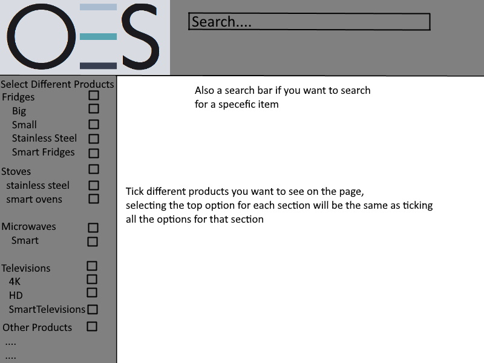
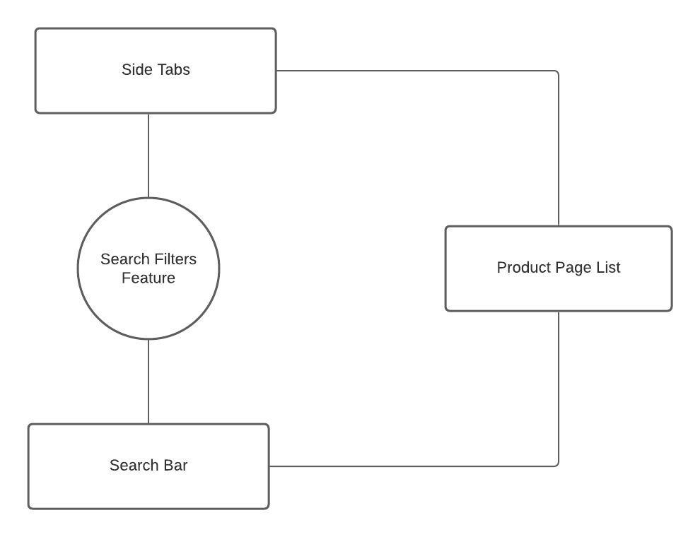

Search Filters - MVF 1 for OES website
Team member in charge of MVF - Christopher Priskas
MVF Description and Low Fidelity Diagram
The search filters are basically all the different ways to search for a different product, so there will be a search bar, where you can search for a specific product to come up, there will also be different tabs on the side where you can look at a range of specific products. Such as looking at all the small fridges, or if you want you can look at all fridges, both large and small.
The low fidelity diagrams are a diagrams that will represent what the page will be and what the search filters will do
Low Fidelity Diagram
High Fidelity Diagram and User Stories
High fidelity prototype
link to high fidelity prototype
This is a prototype of the search filters, so this allows you to click on the side bar, in this protoype, specifiaclly big fridges.
This image shows what happens when you click onto big under fridges on the side bar.

User Stories
User story 1 - Tim
Scenario: Tim wants to buy a new small fridge, but does not know which one, so when he comes on the website, he can easily select the small fridges option, and browse all the different small fridges.
Acceptance criteria:
Tim wants to easily find a way onto the small fridges.
Tim wants to be able to search through and browse the small fridges
Tim uses the search filters to find the small fridges
User story 2 - Joey
Scenario: Joey wants to browse both 4k televesions and hd television, but not smart televisions
Acceptance criteria:
Joey wants to easily find a way onto both 4k and hd televisions
Joey can use search filters to select multiple different products under the televisions section
Joey can now browse the televisions
System Context Diagram for MVF 1
